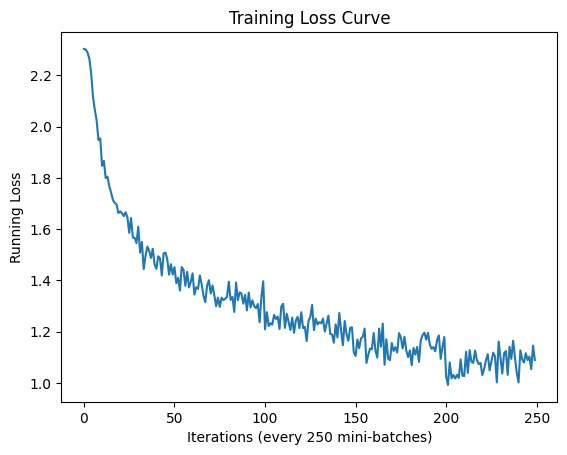
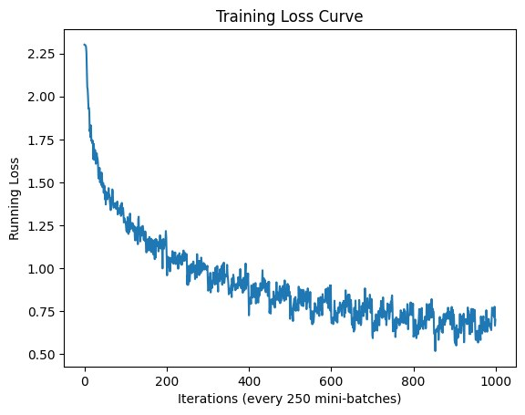
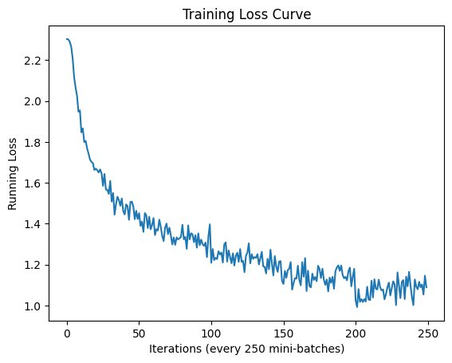
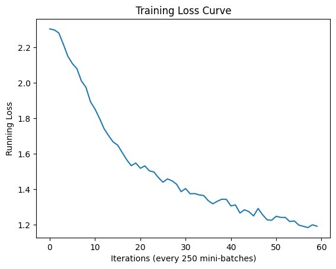

Loading and normalizing the data
Each image channel is normalized as x' = (x - μ) / σ, using the per-channel mean and standard deviation computed on the training set. CIFAR-10 is RGB, so this needs three mean/std values — for a grayscale dataset it would drop to one value each, since there's only a single channel to normalize.

Network architecture
A small LeNet-style CNN: a 5×5 convolution (3→6 channels) into ReLU into 2×2 max pooling, a second 5×5 convolution (6→16 channels) into ReLU into max pooling, then a flatten into three fully connected layers (16·5·5 → 120 → 84 → 10).
- Padding controls how many zero-valued pixels are added around the border before convolving, which directly controls the output feature map size.
- Max pooling keeps only the largest value in each small region, shrinking the feature map while keeping the strongest activations — and since it has no learnable weights, it needs no gradient computed for it during backpropagation.
- Swapping the kernel size to 3 without changing anything else breaks the network: the flattened feature size no longer matches 16·5·5, so the first fully connected layer's input size has to be recalculated and updated to match.
Training, and why gradients get reset every batch
PyTorch accumulates gradients by default — each loss.backward() call adds to whatever gradient is already sitting there. Skipping optimizer.zero_grad() before the next batch would silently mix old and new gradients together, corrupting every update after the first.
torch.manual_seed(7)
np.random.seed(7)
net = Net().cuda()
criterion = nn.CrossEntropyLoss()
optimizer = optim.SGD(net.parameters(), lr=0.001, momentum=0.9)
running_loss_list = []
for epoch in range(num_epochs):
running_loss = 0.0
for i, data in enumerate(train_loader, 0):
inputs, labels = data
inputs, labels = inputs.cuda(), labels.cuda()
optimizer.zero_grad()
outputs = net(inputs)
loss = criterion(outputs, labels)
loss.backward()
optimizer.step()
running_loss += loss.cpu().item()
if i % 250 == 249:
avg_loss = running_loss / 250
running_loss_list.append(avg_loss)
running_loss = 0.0
torch.save(net.state_dict(), PATH)Batch size × epoch count: what actually moved accuracy
Trained the same architecture across four configurations on GPU:
- Batch size 4, 5 epochs: 58.1% test accuracy
- Batch size 4, 20 epochs: 61.2%
- Batch size 16, 5 epochs: 55.5%
- Batch size 16, 20 epochs: 65.7% (best)
At only 5 epochs, the smaller batch size actually won — noisier, more frequent updates helped the model learn faster early on. Once given enough epochs, that reversed: the larger batch's steadier gradient estimates pulled ahead. The single biggest lever, though, was training longer, not the batch size choice itself.




Bonus: why batch normalization behaves differently at test time
During training, batch norm normalizes each activation using the current mini-batch's mean and variance — which differ slightly from batch to batch, injecting a bit of noise that discourages the network from over-relying on any single feature (a mild regularizing effect). At inference there's no batch to compute statistics from, or the batch might be a single example, so it instead uses running averages of the mean and variance accumulated across all of training.